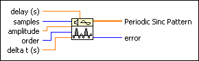
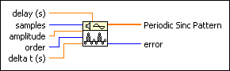
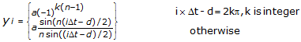

Periodic Sinc Pattern VI
Owning Palette: Signal Generation VIs
Requires: Full Development System
Generates an array containing a periodic sinc pattern.

 Add to the block diagram Add to the block diagram |
 Find on the palette Find on the palette |
Owning Palette: Signal Generation VIs
Requires: Full Development System
Generates an array containing a periodic sinc pattern.

| Add to the block diagram |
Find on the palette |
 |
delay (s) shifts the peak of the Periodic Sinc Pattern. The default is 0. |
 |
samples is the number of samples of the Periodic Sinc Pattern. If samples is less than 1, the VI sets Periodic Sinc Pattern to an empty array and returns an error. The default is 128. |
|
amplitude is the amplitude of the Periodic Sinc Pattern. The default is 1. |
|
order specifies the number of zero crossings between two adjacent peaks, which is equal to order – 1. The default is 9. |
|
delta t (s) is the sampling interval. delta t (s) must be greater than zero. If delta t (s) is less than or equal to zero, the VI sets Periodic Sinc Pattern to an empty array and returns an error. The default is 0.1. |
 |
Periodic Sinc Pattern is an array that contains the periodic sinc pattern of samples. |
 |
error returns any error or warning from the VI. You can wire error to the Error Cluster From Error Code VI to convert the error code or warning into an error cluster. |
If the sequence Y represents Periodic Sinc Pattern, the Periodic Sinc Pattern VI generates the pattern according to the following equation.

for i = 0, 1, 2, …, N – 1, where a is the amplitude, n is the order, d is the delay (s), and N is the samples. A higher value n results in a wider bandwidth.